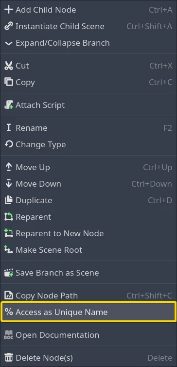
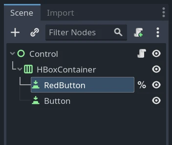
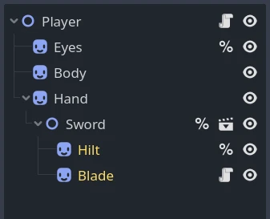

Node duy nhất trong scene
Giới thiệu
Dùng get_node() để tham chiếu node từ script đôi khi dễ bị hỏng. Nếu bạn di chuyển một nút bấm trong scene UI từ panel này sang panel khác, đường dẫn node của nút bấm sẽ thay đổi, và nếu một script dùng get_node() với đường dẫn node được viết cứng, script sẽ không thể tìm thấy nút bấm nữa.
Trong những tình huống như vậy, node có thể được biến thành một scene unique node để tránh phải cập nhật script mỗi khi đường dẫn của node thay đổi.
Tạo và sử dụng
Có hai cách để tạo một scene unique node.
Trong dock Scene tree, nhấp chuột phải vào một node và chọn Access as Unique Name trong menu ngữ cảnh.

Sau khi chọn tùy chọn này, node sẽ có ký hiệu phần trăm (%) bên cạnh tên của nó trong scene tree:

Bạn cũng có thể làm điều này khi đổi tên node bằng cách thêm "%" vào đầu tên. Sau khi bạn xác nhận, ký hiệu phần trăm sẽ xuất hiện bên cạnh tên của nó.
Giờ bạn có thể dùng node đó trong script. Ví dụ, bạn có thể tham chiếu nó bằng một lời gọi phương thức get_node() bằng cách gõ ký hiệu %, theo sau là tên của node:
get_node("%RedButton").text = "Hello"
%RedButton.text = "Hello" # Shorter syntax
GetNode<Button>("%RedButton").Text = "Hello";
Giới hạn trong cùng scene
Một scene unique node chỉ có thể được lấy bởi một node nằm trong cùng scene. Để minh họa giới hạn này, hãy xét scene Player ví dụ sau, có tạo instance một scene Sword:

Đây là kết quả của các lời gọi get_node() bên trong script Player:
get_node("%Eyes")trả về node Eyes.get_node("%Hilt")trả vềnull.
Đây là kết quả của các lời gọi get_node() bên trong script Sword:
get_node("%Eyes")trả vềnull.get_node("%Hilt")trả về node Hilt.
Nếu một script có quyền truy cập đến một node trong scene khác, nó có thể gọi get_node() trên node đó để lấy các scene unique node từ scene của node đó. Cách này cũng hoạt động trong đường dẫn node, giúp tránh phải gọi get_node() nhiều lần. Đây là hai cách để lấy node Hilt từ script Player bằng scene unique node:
get_node("Hand/Sword").get_node("%Hilt")trả về node Hilt.get_node("Hand/Sword/%Hilt")cũng trả về node Hilt.
Tên duy nhất trong scene không chỉ hoạt động ở cuối đường dẫn node. Chúng có thể được dùng ở giữa đường dẫn để điều hướng từ node này sang node khác. Ví dụ, node Sword được đánh dấu là scene unique node trong scene Player, nên có thể làm thế này:
get_node("%Sword/%Hilt")trả về node Hilt.
Các phương án thay thế
Scene unique node là một công cụ hữu ích để điều hướng trong scene. Tuy nhiên, có một số tình huống mà các kỹ thuật khác có thể tốt hơn.
Một Group cho phép định vị một node (hoặc một nhóm nhiều node) từ bất kỳ node nào khác, bất kể hai node nằm trong scene nào.
Một Singleton (Autoload) là một node luôn được tải và có thể được truy cập trực tiếp bởi bất kỳ node nào, bất kể scene. Chúng hữu ích khi một số dữ liệu hoặc chức năng được chia sẻ toàn cục.
Node.find_child() tìm một node theo tên mà không cần biết đường dẫn đầy đủ của nó. Điều này có vẻ giống scene unique node, nhưng phương thức này có thể tìm node trong các scene lồng nhau, và không yêu cầu đánh dấu node trong trình chỉnh sửa scene theo bất kỳ cách nào. Tuy nhiên, phương thức này chậm. Scene unique node được Godot lưu cache và lấy ra rất nhanh, nhưng mỗi lần phương thức được gọi, find_child() cần kiểm tra mọi node hậu duệ (mọi node con, node cháu, v.v.).